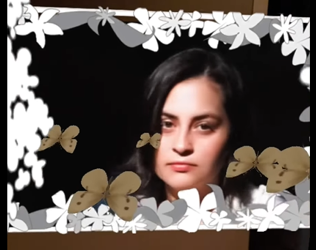

"YinYang"
Note: Unmute Audio"YinYang", Virtual Digital Video Installation, 3 m 43 s, 2020
I collaborated with Lily Mendoza for "YinYang." This piece is inspired by the complementary relationship between light and darkness. While the videos initially separate the light from the darkness through parallels and juxtaposition, the narrative concludes with the presence of both forces in both worlds and characters. Thus, the work reveals the interrelation of both concepts which are a part of every person and the basis of the complexity of human nature and life itself. This collection of four short films are meant to be projected simultaneously on the four walls of a room. We wanted to immerse the viewer in the two realms that we created, so they can experience the light and dark closely without escape.
Featuring: Leksi Lincoln, Lanie Lincoln, and Gabe Mendoza
Music:
Willow Trees - Adobe Stock
Apocalypse - Adobe Stock
Radio Static - gowlermusic
Film_Static_04 - JoeDeshon